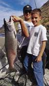
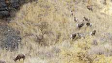

RIVER OF NO RETURN — THE LOWER MAIN SALMON

The Salmon River in Idaho is the longest free flowing river in the lower 48 states. Known originally for it impressive salmon runs, it winds through the heart of Idaho's backcountry for approximately 900 miles, dropping 7,000 feet in elevation. The Salmon River completes its journey through Idaho's wilderness lands at a confluence with the Snake River in Hells Canyon. This final 54 mile stretch is called the Lower Main Salmon.
 The Lower Salmon treats its visitors to varying terrain as it twists through narrow rock canyons, then drifts into wide angle views of massive grassy mountainsides, accented with stair step columnar basalt formations. Lined with white sandy beaches, the river brings a relaxing, luxurious feel to camping at river's edge. A warm summer day will prompt you to dive right from your camp chair into the green waters for a cooling swim.
Amazingly, this solitary and picturesque setting was actually the site of historic struggles. In 1877, at the threat of either death or reservation life, Chief Joseph's band of Nez Perce strategically avoided U.S. soldiers by crossing the dangerous waters of the Salmon numerous times. Many significant battles took place in the Salmon river country between the Nez Perce and the calvary commanded by General Oliver Otis Howard. Also, from the late 1800's through the early 1900's homesteaders tested themselves to a rough way of life. Building homes along the banks of the Lower Salmon, they attempted to live off its wild resources. Miners prospected for gold and other valuable metals, while sheep and cattle ranchers vied for rangeland.
 The Salmon River's pool and drop style of white water sports dozens of class II and III rapids which make kayaking and paddle rafting an exhilarating experience. There are many waves and holes for the experienced kayaker to surf, as well as routes through rapids for beginning kayakers of all ages.
If you enjoy looking for wild life, you will be excited to spot a mule deer followed by a small fawn, Mallards with their ducklings, or frolicking river otter families. These are common among the many species of birds, big game, and other wild life along the Salmon's banks. The diverse fishery includes trout, steelhead, bass, catfish, and fresh water sturgeon.
|
Rates and Dates Book a trip Rivers: • Snake • Salmon Boats Equipment Food etc. Map |
or e-mail us